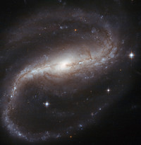
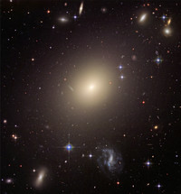
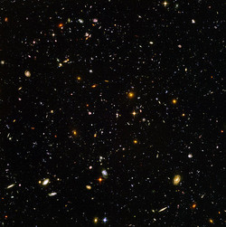
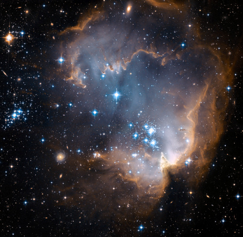
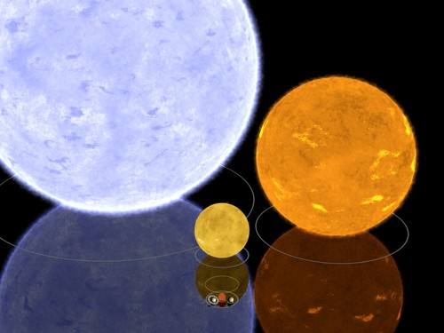
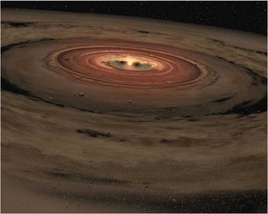
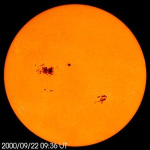

Tähtitieteellisen tutkimuksen piiriin kuuluu aivan kaikki ilmakehän ulkopuolella oleva – Kuu, aurinkokuntamme, lähitähdet, Linnunrata ja koko universumin galaksipaljous.
Aloita tutustuminenAina 1600-luvulle saakka kaikki tähtitieteelliset havainnot piti tehdä paljain silmin. Kaukoputken keksimisen myötä saatettiin nähdä kauempana olevia ja himmeämpiä kohteita, ja maailmankuvamme mullistui. Maa ei ollutkaan maailmankaikkeuden keskipiste, vaan planeettamme kiersikin Aurinkoa, joka sekin oli vain yksi monista tähdistä Linnunradan tähtimuodostelmassa.
Valokuvauksen keksiminen 1800-luvun alkupuolella mullisti tähtitieteen uudelleen. Radiotähtitiede avasi tien uusille havaintomenetelmille kuten infrapunatähtitieteelle ja röntgentähtitieteelle. Näin ymmärryksemme maailmankaikkeudesta on syventynyt merkittävästi.
Lue lisääKuun vaiheet, pimennykset, tähdenlennot ja planeetat näkyvät hyvin paljain silmin.
Kaukoputken avulla voi tehdä pitkäkestoisia havaintoja, joihin ammattilaislaitteet eivät ehdi.
Radiosäteily paljastaa rakenteita, jotka ovat näkyvälle valolle läpinäkymättömiä.
Suomalaiset harrastajat ovat mukana gammapurkausten ja supernovien ammattitutkimuksessa.
Galaksit ovat valtavia kaasusta, pölystä, pimeästä aineesta ja tähdistä muodostuneita rakenteita, joita painovoima pitää kasassa. Maailmankaikkeudessa arvellaan olevan ainakin 170 miljardia galaksia.
Spiraaligalaksit ovat litteän kiekkomaisia. Myös oman galaksimme Linnunradan on huomattu olevan sauvaspiraaligalaksi. Aurinkokunta sijaitsee Linnunradan kiekon tasossa, ja meitä ympäröivä kiekko näkyy pimeällä yötaivaalla sumumaisena vanana.
Elliptiset galaksit muodostavat noin 10–15 % kaikista galakseista. Universumin kaikkein massiivisimmat galaksit ovat elliptisiä, ja ainakin osan niistä uskotaan syntyvän galaksien yhteentörmäyksissä.

~60% kaikista galakseista. Linnunrata on sauvaspiraaligalaksi.

~10–15% galakseista. Universumin massiivisimmat.

Maailmankaikkeudessa on ainakin 170 miljardia galaksia.
Useimpien galaksien ytimessä on supermassiivinen musta aukko.


Tähdet syntyvät, kun tähtienvälinen kaasu- ja pölypilvi luhistuu kasaan. Pilvi koostuu pääasiassa vedystä, heliumista ja hieman raskaammista alkuaineista.
Pilven ytimeen tiivistyy tähti ja sen ympärille usein planeettoja. Tähdet ja planeetat syntyvät yhdessä. Jos massa riittää, vety alkaa fuusioitua heliumiksi.
Tähti viettää pääosan elinkaarestaan muuttaen vetyä heliumiksi. Mitä enemmän massaa, sitä kiivaammin prosessi etenee. Vasta rauta kuluttaa enemmän energiaa kuin tuottaa.
Pienemmät tähdet sammuvat hiljaksiin, kun taas massiiviset tähdet räjähtävät supernovaksi ja jättävät jälkeensä neutronitähden tai mustan aukon.
Aurinkokunta muodostui noin 4,57 miljardia vuotta sitten suuren tähtienvälisen kaasupilven luhistuessa. Pilveen syntyi monia tiivistymiskeskuksia, joihin syntyi tähtiä – Aurinko oli yksi niistä.
Aurinkokunnassa on kahdenlaisia planeettoja: pieniä kiviplaneettoja sekä suuria kaasuplaneettoja. Kaasuplaneetat muodostuivat jäärajan takana, jossa kaasumaiset aineet jäätyivät helposti. Kiviplaneetat, kuten Maa ja Venus, syntyivät lähempänä Aurinkoa.
Lopulta Aurinko imi itseensä materiaalia ympäröivästä kiekosta. Noin 50 miljoonan vuoden jälkeen se oli riittävän massiivinen muuttaakseen vetyä heliumiksi ytimessään – näin syntyi täysikasvuinen tähti.

Aurinkokunta muodostui kaasupilvestä

Aurinko – aurinkokuntamme tähti (kuva 22.9.2000)
Kiinnostuitko tähtitieteestä? Lähetä meille viesti ja otamme sinuun yhteyttä mahdollisimman pian!